Audio实战：构建一个Kotlin版本的四则运算计算器
你好，我是朱涛。
前面几节课，我们学了不少 Kotlin 的语法，也算是对 Kotlin 有了一个基本认识。不过，单纯只认识 Kotlin 是远远不够的，我们还要会用 Kotlin。当遇到一个具体问题的时候，我们得能用 Kotlin 来解决这个问题。换句话说，就是要实战。在实战的过程中，我们对 Kotlin 的理解也会进一步加深。
那么这节课，我们就把前面的知识点串联起来，一起做一个 Kotlin 版本的计算器。为了便于理解，我会以循序渐进的方式来编写这个计算器程序，由简单到复杂。你在这个由易到难的实操过程中，可以实际体会到 Kotlin 的代码实现思路以及编码方式的变化，进而也就能更好地掌握和运用前面所学的基础语法，以及与面向对象相关的知识点。
这个计算器程序大致会分为三个版本：
计算器 1.0，实现两个整数的“加减乘除”，对输入数据有严格要求。
计算器 2.0，对输入数据无严格要求，融入面向对象的编程思想。
计算器 3.0，支持“大数的加法”，增加单元测试。
现在，我们就开始实战吧。
创建 Kotlin 工程
如果你之前没有使用过 IntelliJ 或 Android Studio，你可能还不知道怎么创建一个工程。别担心，这个过程其实很简单，它分为以下几个步骤。
第一步：选择菜单“File -> New -> Project”。
第二步：选中菜单左边的“Gradle”，然后在右边勾选“Java 和 Kotlin/JVM”，最后点击右下角的“Next”。
第三步：给工程取一个你喜欢的名字，我们这里就用 Calculator。GroupId 这个地方一般使用倒过来的域名，这里根据你的实际情况填写即可。默认情况下，IDE 会自动帮你设置成“org.example”，所以你不去改动它也没问题。最后，我们点击 Finish，工程就创建成功了！
第四步：等待工程配置完成。如果你是第一次创建 Kotlin 工程，点击 Finish 以后，你可能需要等待一段时间，IDE 需要下载 Gradle，然后用 Gradle 下载工程所需的依赖。当你在 IDE 当中能看到这样的工程结构时，这个工程就算配置完成了。
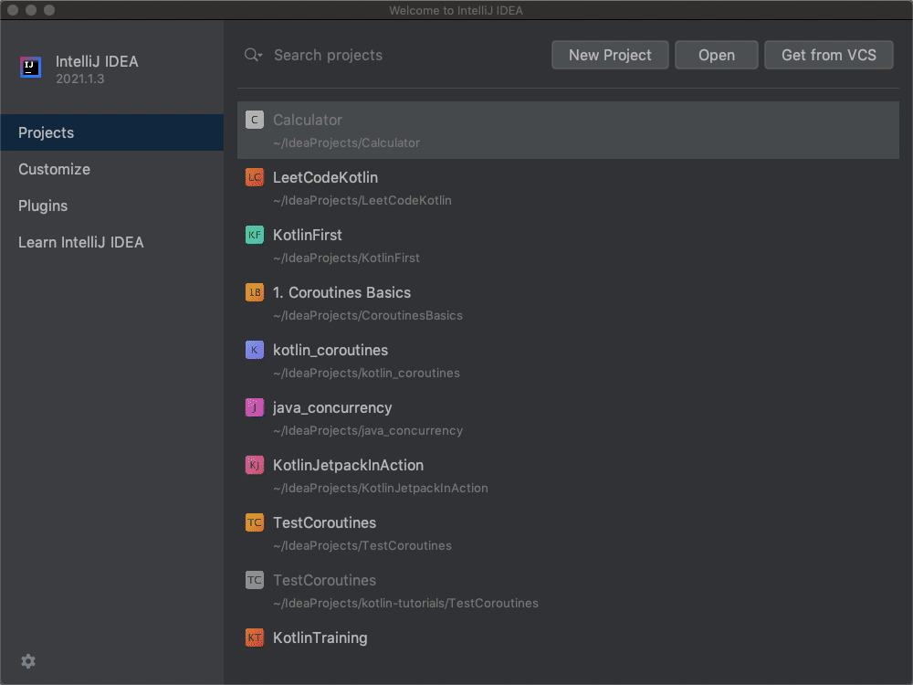
导入初始化工程
其实，你只需要知道如何创建一个 Kotlin 工程就行了，也没必要真的跟着我一步步操作。课程配套的源代码已经在GitHub开源，你可以将其下载下来并切换到 start 分支，这样就可以跟着课程一步步实现计算器的三个版本了。
具体做法是这样的：打开 IntelliJ，点击“Get from VCS”按钮，接着在弹出的窗口中，填入我们的 GitHub URL“https://github.com/chaxiu/Calculator.git”，然后点击右下角的 Clone 按钮即可。
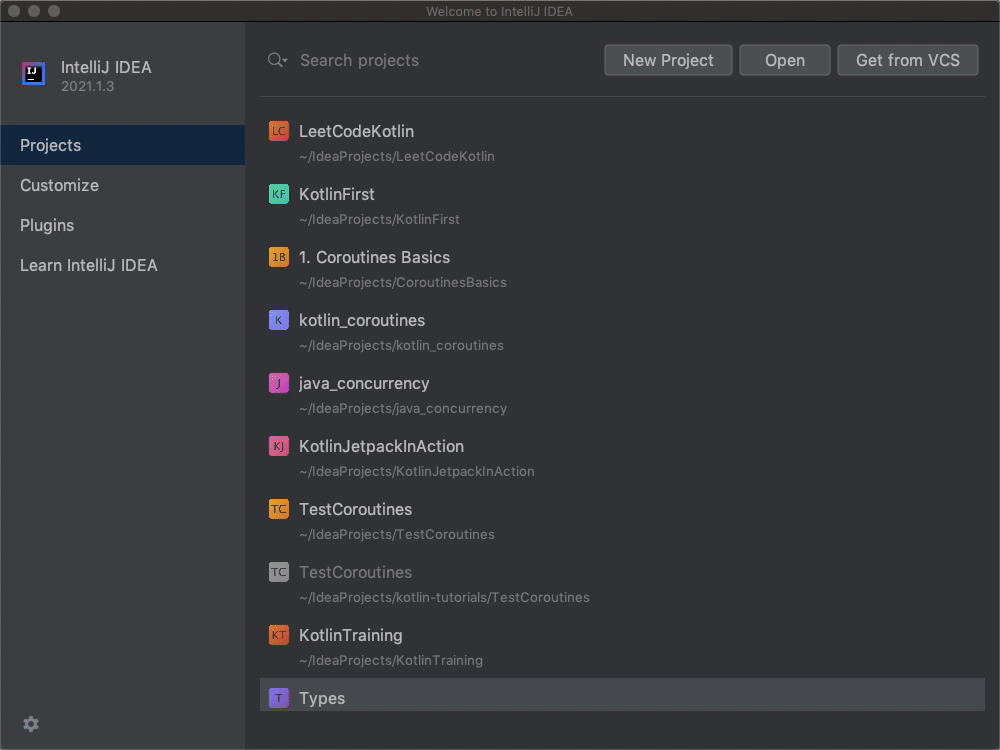
等代码下载完成以后，IDE 会问你是否要打开此工程，我们选择打开。这样，我们的计算器工程就算导入进来了。
最后，我们还需要将工程改为初始化状态，借助 Git 我们可以非常方便地实现：
在 IntelliJ 的右下角，找到 main 按钮并且点击；
在弹出的菜单中，点击 start 分支；
最后，点击 Checkout，代表将当前代码切换到初始状态。
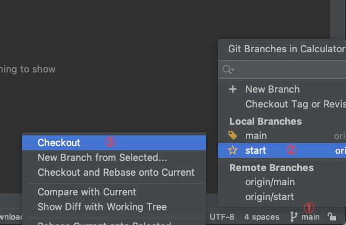
这样，我们就完成了整个工程的初始化配置了。为了测试我们的开发环境是否已经配置好，我们可以打开工程里的 HelloWorld 文件，运行一下，看看程序是否正常执行。
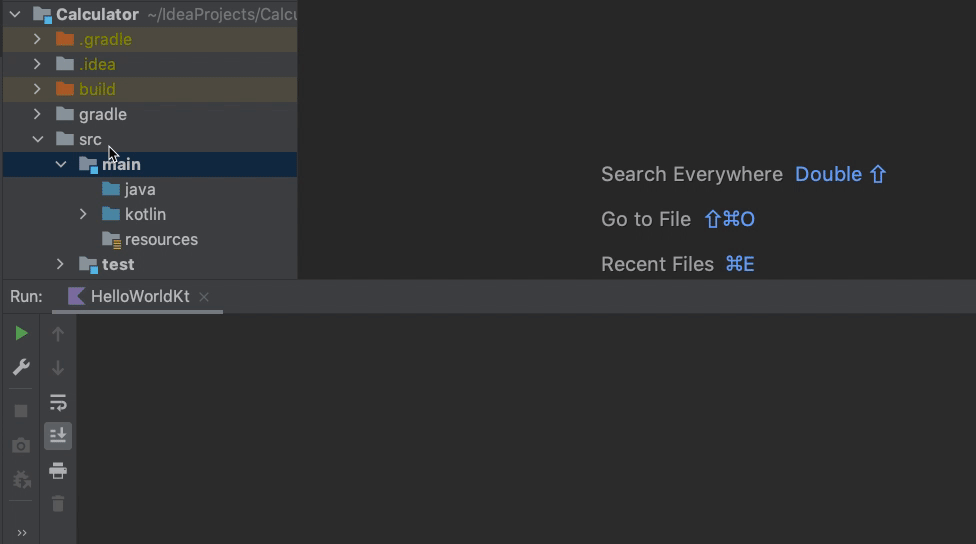
如果你也能在工程当中看见控制台输出“Hello world.”，说明你的开发环境已经完全没问题了。接下来，就让我们一起用 Kotlin 完成计算器的 1.0 版本吧！
计算器 1.0
第一个版本的计算器，它的功能非常简单，你可以看看下面的动图演示。
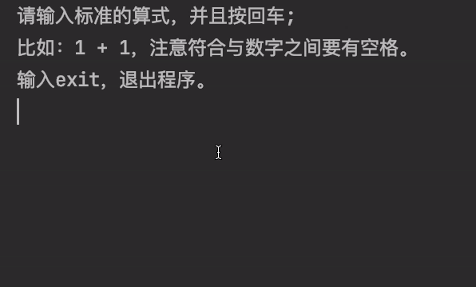
我们大致列举一下这个计算器的功能需求：
交互式界面，输入算式，按下回车，程序就会帮我们计算出结果；
数字与字符之间要求有空格，“1 + 1”是可以的，“1+1”则不行；
输入 exit，按下回车，程序就会退出；
支持“加减乘除”，四种运算，仅支持两个数的运算。
搞清楚功能需求以后，我们就可以开始写代码了。
首先，我们要创建一个 Kotlin 源代码文件：在 Kotlin 文件夹下，点击右键，选择“New -> Kotlin Class/File”，然后填写文件名字即可，这里我们创建一个名为 Calculator 的 Kotlin 文件。
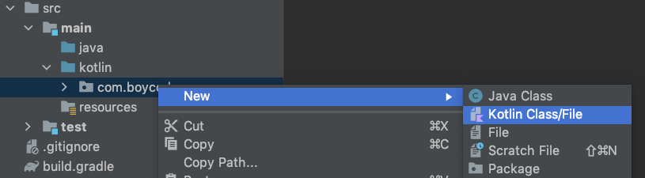
由于我们的程序要和命令进行交互，根据不同的命令来做出不同的行为，因此，我们的程序需要有一个 while 循环的逻辑，在循环当中，还要读取命令行的输入，然后根据输入的结果来判断执行逻辑。我们可以将整个程序分为以下几个步骤：
初始化，打印提示信息；
第一步，读取输入命令；
第二步，判断命令是不是 exit，如果用户输入的是“exit”则直接退出程序；
第三步，解析算式，分解出“数字”与“操作符”：“1”“+”“2”；
第四步，根据操作符类型，算出结果：3；
第五步，输出结果：1 + 2 = 3；
第六步，进入下一个 while 循环。
fun main() {
while(true) {
// 初始化，打印提示信息
println("请输入标准的算式，并且按回车; \n" +
"比如：1 + 1，注意符合与数字之间要有空格。\n" +
"输入exit，退出程序。")
// 第一步，读取输入命令；
var input = readLine()
if (input == null) continue
// 第二步，判断命令是不是exit，如果是则直接退出程序；
if (input == "exit") exitProcess(0)
// 第三步，解析算式，分解出“数字”与“操作符”：“1”“+”“2”；
var inputList = input.split(" ")
// 第四步，根据操作符类型，算出结果：3；
var result = calculate(inputList)
// 第五步，输出结果：1 + 2 = 3；
if (result == null) {
println("输入格式不对")
continue
} else {
println("$input = $result")
}
// 第六步，进入下一个while循环。
}
}
// 具体计算逻辑
private fun calculate(inputList: List<String>): Int? {
if (inputList.size != 3) return null
// 第七步，取出数字和操作符
var left = inputList.get(0).toInt()
var operation = inputList.get(1)
var right = inputList.get(2).toInt()
// 第八步，根据操作符的类型，执行计算
when(operation) {
"+" -> return left + right
"-" -> return left - right
"*" -> return left * right
"/" -> return left / right
else -> return null
}
}上面的代码非常简单直白，即使你没有任何编程经验，应该也能够理解。它也非常符合人的编程直觉。
不过，站在 Kotlin 的角度上看，以上的代码其实是有不少问题的，让我们通过一个图来对比着看：
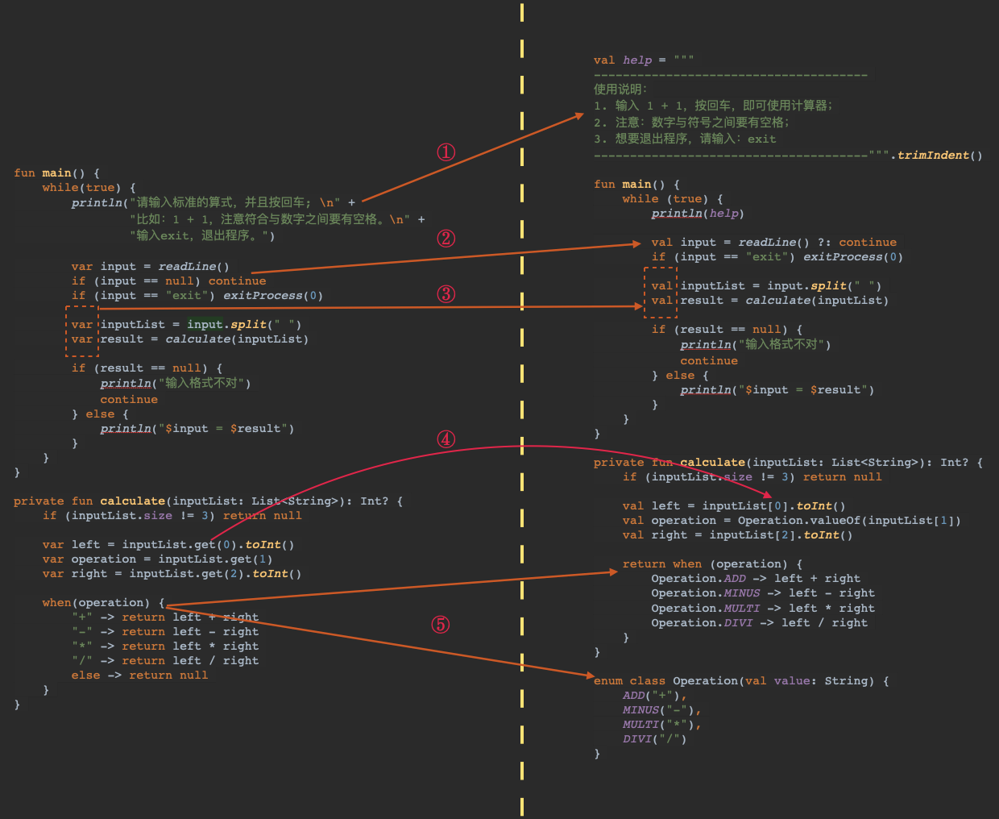
箭头①，表示程序中的“提示信息”应该使用 Kotlin 的“三引号”的原始字符串，这样的话，我们可以省去繁琐的“\n 和 +”，并且所见即所得；
箭头②，表示读取输入命令后，我们可以直接使用 Elvis 表达式，两行代码就会变成一行；
箭头④，表示 inputList.get(i) 可以改为 inputList[i]，这是因为 Kotlin 统一了数组和集合的元素访问操作，我们再也不用担心弄混了。
箭头⑤，表示了两点。首先，我们可以将 return 放到 when 表达式的前面，这样就省得我们每个分支都写一遍 return。另外，当我们使用 when 表达式的时候，应该尽量结合“枚举”或者“密封类”来使用。为此，我们可以为“加减乘除”四个操作符创建一个枚举类。这样，when 表达式的分支会自动判定完备，而不需要 else 分支了。
那么经过调整，最终的源代码应该是这样的：
val help = """
--------------------------------------
使用说明：
1. 输入 1 + 1，按回车，即可使用计算器；
2. 注意：数字与符号之间要有空格；
3. 想要退出程序，请输入：exit
--------------------------------------""".trimIndent()
fun main() {
while (true) {
println(help)
val input = readLine() ?: continue
if (input == "exit") exitProcess(0)
val inputList = input.split(" ")
val result = calculate(inputList)
if (result == null) {
println("输入格式不对")
continue
} else {
println("$input = $result")
}
}
}
private fun calculate(inputList: List<String>): Int? {
if (inputList.size != 3) return null
val left = inputList[0].toInt()
val operation = Operation.valueOf(inputList[1])
val right = inputList[2].toInt()
return when (operation) {
Operation.ADD -> left + right
Operation.MINUS -> left - right
Operation.MULTI -> left * right
Operation.DIVI -> left / right
}
}
enum class Operation(val value: String) {
ADD("+"),
MINUS("-"),
MULTI("*"),
DIVI("/")
}好，我们的计算器 1.0 版本，到这里就算是完成了。
如果你跟随着我，一起来实现了这个简单的计算器，那么你在这个实操过程中就可以体会到，Kotlin 编程与传统的 Java/C 之间确实是存在着一定的差别的。
想要学会 Kotlin 语法其实不难，但要写出优雅的 Kotlin 代码，却不是一件容易的事情。我们唯一能做的，就是多写 Kotlin 代码，同时多看优秀的 Kotlin 代码，以及多思考改进自己已有的代码。
好，接着让我们进入第二个版本的开发吧！
计算器 2.0
在 2.0 版本中，我们会分成两个阶段：
第一个阶段，融入面向对象的思想。1.0 版本中，我们只写了两个函数，一个是 main() 函数，另一个是 calculate() 函数。虽然这样的设计非常直观且便于理解，但却不太符合我们工程界的思维习惯。我们应该将程序封装到一个类当中，并且尽量让每个函数的功能划分清楚，保持每个函数尽量简单。
第二个阶段，兼容输入格式。1.0 版本中，我们对输入有严格的要求，数字和符号之间必须有空格，否则我们的算式解析会出错。在 2.0 版本中，我们尝试兼容不同的输入格式，不管数字和符号之间有没有空格，我们都要能成功执行。
让我们一步步来，首先是融入面向对象的思想。
第一阶段：融入面向对象思想
具体做法其实也很简单，我们可以将前面定义的两个函数收拢到一个类当中去，比如“CalculatorV2”：
class CalculatorV2 {
fun start() {}
fun calculate(input: String): Int? {}
}可以看到，在这个 CalculatorV2 类当中有两个方法，start() 用于启动我们的计算器程序，监听控制台的文本输入；calculate(input) 用于接收输入文本，计算出算式的结果，然后返回一个可为空的整型，当输入不合法的时候会返回 null。
这样，我们的计算器作为一个整体已经是一个对象了，我们可以很方便地在 main() 函数当中，创建一个实例，并且调用它的 start() 函数。这样一来，我们的计算器也就可以充分发挥出面向对象的优势。
fun main() {
val calculator = CalculatorV2()
calculator.start()
}除了计算器本身需要面向对象，我们的输入表达式也可以抽象出一个具体模型出来。
我们知道，一个算式分为左边的数字、操作符和右边的数字。因此我们还可以定义一个类，来代表算式表达式。
data class Expression(
val left: String,
val operator: Operation,
val right: String
)比如，我们想要表达“1 + 2”这个式子的话，我们就可以用这样一个结构来表示：
Expression("1", Operation.ADD, "2")那么，在完成了面向对象的模型化以后，我们还需要进一步拆分函数的职责与颗粒度。其中，start() 方法，主要用于控制程序的流程、输入与输出：
fun start() {
while (true) {
println(HELP)
val input = readLine() ?: continue
val result = calculate(input)
if (result == null) {
println("输入格式不对")
continue
} else {
println("$input = $result")
}
}
}而 calculate() 方法，则需要进一步地拆分：
fun calculate(input: String): String? {
if (shouldExit(input)) exitProcess(0)
val exp = parseExpression(input) ?: return null
val left = exp.left
val operator = exp.operator
val right = exp.right
return when (operator) {
Operation.ADD -> addString(left, right)
Operation.MINUS -> minusString(left, right)
Operation.MULTI -> multiString(left, right)
Operation.DIVI -> diviString(left, right)
}
}
fun addString(left: String, right: String): String {
val result = left.toInt() + right.toInt()
return result.toString()
}
fun minusString(left: String, right: String): String {
val result = left.toInt() - right.toInt()
return result.toString()
}
fun multiString(left: String, right: String): String {
val result = left.toInt() * right.toInt()
return result.toString()
}
fun diviString(left: String, right: String): String {
val result = left.toInt() / right.toInt()
return result.toString()
}
fun shouldExit(input: String): Boolean {
return input == EXIT
}
fun parseExpression(input: String): Expression? {
// 待完成
}
fun parseOperator(input: String): Operation? {
// 待完成
}通过以上代码可以看到，我们拆分 calculate() 方法主要做了三件事：
第一，将“是否退出”的逻辑封装到了 shouldExit() 方法当中，如果将来这部分逻辑变得更复杂，我们只改动这一个方法即可。
第二，将算式的解析，封装到了 parseExpression() 方法当中，而解析算式的时候也需要解析操作符，这时候我们也需要 parseOperator()。
第三，将具体的计算逻辑交给了对应的方法。这么做的原因，是可以让我们的程序变得更加灵活。比如，我们在下个版本当中会更改“加法”的计算逻辑，那么我们就只需要改动这一个方法就行了。
同时，以上所有独立抽出来的方法，它们也都将变得可测试，这有利于提升程序的稳定性。
到这里，我们对计算器 2.0 的第一阶段改造就差不多完成了，我们融入了面向对象的思想，也对 calculate() 方法进行了更细颗粒度的拆分。下一步，我们要做的就是兼容算式的格式，让它能够解析没有空格的算式。
第二阶段：兼容输入格式
现在，假设我们的输入是“1+2”，数字与字符之间没有空格。那在这种情况下，我们就无法使用空格作为分隔符了。所以要换一种方式，想办法从算式当中，解析出操作符“加减乘除”中的一种，然后再用操作符作为我们的分隔符去找出数字。
其实，因为操作符只有这四种情况，所以我们很容易就能想到一种方案，一个个去尝试：
fun parseOperator(input: String): Operation? {
return when {
input.contains(Operation.ADD.value) -> Operation.ADD
input.contains(Operation.MINUS.value) -> Operation.MINUS
input.contains(Operation.MULTI.value) -> Operation.MULTI
input.contains(Operation.DIVI.value) -> Operation.DIVI
else -> null
}
}虽然，这段代码运行起来没什么问题，逻辑也非常得清晰，但它看起来很丑陋。而且它还有一个坏处：随着枚举类型的增多，我们的逻辑分支也会增多，手动添加起来也特别麻烦。
因此这种情况，我们就应该充分借助 Kotlin 枚举的优势，通过遍历的方式来做：
fun parseOperator(input: String): Operation? {
Operation.values().forEach {
if (input.contains(it.value)) {
return it
}
}
return null
}可以看到，优化后的代码中，我们不再需要手动地去写 when 的逻辑分支，也不必自己去枚举 Operation 的每一种情况，就连代码量也降低了很多，即使将来枚举种类增加了，我们也不必修改这部分代码了。
需要注意，以上的代码中，我们用到了集合遍历的语法“forEach”，你可以将它想象成强化版的 for 循环，它具体的用法我会在后面“Kotlin 集合”那一节中讲解。
现在，对于一个算式“1+2”，我们已经可以成功解析出操作符“+”了，接下来要做的，就是通过“+”来分割字符串，将左右两个数字取出来“1”“2”。这个逻辑就很简单了：
fun parseExpression(input: String): Expression? {
// 解析操作符
val operation = parseOperator(input) ?: return null
// 用操作符分割算式，拿到数字
val list = input.split(operation.value)
if (list.size != 2) return null
return Expression(
// 算式左边
left = list[0].trim(),
operator = operation,
// 算式右边
right = list[1].trim()
)
}以上代码大致分为三个步骤，我们以“1+2”为例：
第一个步骤，调用 parseOperator() 方法解析操作符“+”；
第二个步骤，根据操作符分割算式的数字，分割之后得到的会是“1”“2”组成的列表；
第三个步骤，将操作符、数字组合成 Expression 对象。
这里有一个细节需要注意，我们兼容的输入其实有两种情况，第一种是不包含空格“1+2”，那么我们解析出来的数字会是“1”“2”，这种情况下不会有问题；但还有第二种情况包含空格，对于原本正确的格式，我们更应该支持，比如“1 + 2”，被分隔之后的结果会是“1 ”“2”，这两个数字当中是包含空格符的。
所以，我们使用了list[0].trim()，这里的trim()方法就是用于去掉多余空格的。
让我们实际运行一下看看效果：
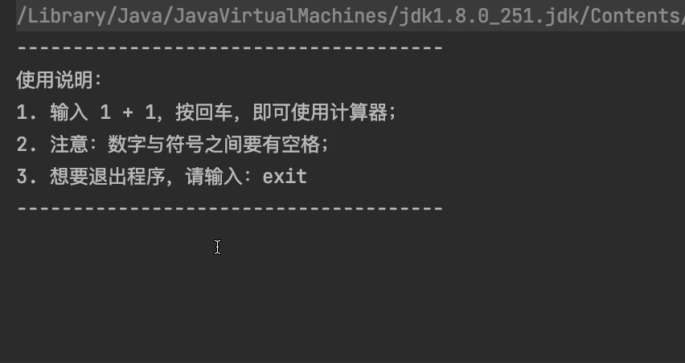
至此，我们的计算器 2.0 版本就完成了。在 2.0 版本的实操过程中，我们其实是在原有的基础上，融入了面向对象的思想，将计算器功能收拢到了一个类当中，同时也对计算器内部的方法进行了细颗粒度的拆分。
在这个过程中，我们创建了三个类：“Calculator”类，代表整个计算器；“Operation”枚举类，代表加减乘除四种运算操作符；“Expression”数据类，代表我们算式当中的数字和操作符。之后，我们又对计算器的核心功能进行了更细颗粒度的拆分，提高了程序的灵活性，为我们的功能扩展打下了基础。
好了，现在让我们进入 3.0 版本的开发吧。
计算器 3.0
针对 3.0 这个版本，我们也分为了两个阶段：
第一阶段，增加单元测试。单元测试是软件工程当中的一个概念，它指的是对软件当中的最小可执行单元进行测试，以提高软件的稳定性。在 Java 当中，最小单元一般会认为是类，因此，我们一般会以类为单元，对类当中的方法进行一一测试。
第二阶段，支持大数的加法。我们知道 Java、Kotlin 当中的整型都是有范围限制的，如果我们输入两个特别大的数字进行计算，那么程序是无法正常工作的。因此，我们需要对特别大的数进行兼容。
下面，我们先来搞定单元测试。
第一阶段：单元测试
在 Kotlin 当中，如果要使用单元测试，我们需要在 gradle 文件当中，添加 Kotlin 官方提供的依赖：
testImplementation 'org.jetbrains.kotlin:kotlin-test'这样，我们的工程就拥有单元测试的能力了。单元测试的代码，我们一般会放在工程的 test 目录下：
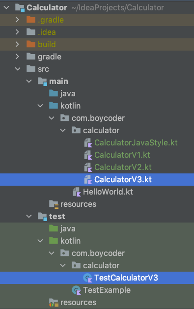
我们可以从这个图中看出很多信息：
第一，test 目录、main 目录，它们是平级的目录，内部拥有着相同的结构。main 目录下放的是功能代码，test 目录下放的则是测试代码。
第二，由于我们要开发 3.0 版本，所以我们在 main 目录下创建了 CalculatorV3 这个类；另外，由于我们需要在 3.0 版本加入单元测试，所以对应的，我们在 test 目录下相同的地方，创建了 TestCalculatorV3。这两个类的关系是一一对应的，CalculatorV3 是为了实现 3.0 版本的功能，TestCalculatorV3 是为了测试 3.0 版本的功能，确保功能正常。
不过这里你要注意，虽然我们创建了 CalculatorV3 这个类，但其实它里面的代码还是用的 CalculatorV2 的代码。3.0 版本的功能，我们放到第二阶段才会去实现。
接下来，让我们来编写测试代码：
class TestCalculatorV3 {
@Test
fun testCalculate() {
val calculator = CalculatorV3()
val res1 = calculator.calculate("1+2")
assertEquals("3", res1)
}
}首先，我们定义了一个方法 testCalculate()，并且使用了一个注解 @Test 来修饰它。因为这样做以后，IntelliJ 就会知道：哦，这是一个用来做测试的方法。
接着，我们在 testCalculate() 当中创建了一个 CalculatorV3 的对象，然后调用了它的 calculate() 方法，传入了“1+2”。我们知道，如果程序正常工作的话，返回的结果应该是“3”。因此，我们紧接着就执行了一个断言“assertEquals(“3”, res1)”，它的意思是“res1 一定等于 3”。如果 res1=3，那么我们的单元测试就会成功，否则就会失败。
我们可以看看单元测试运行成功的效果：
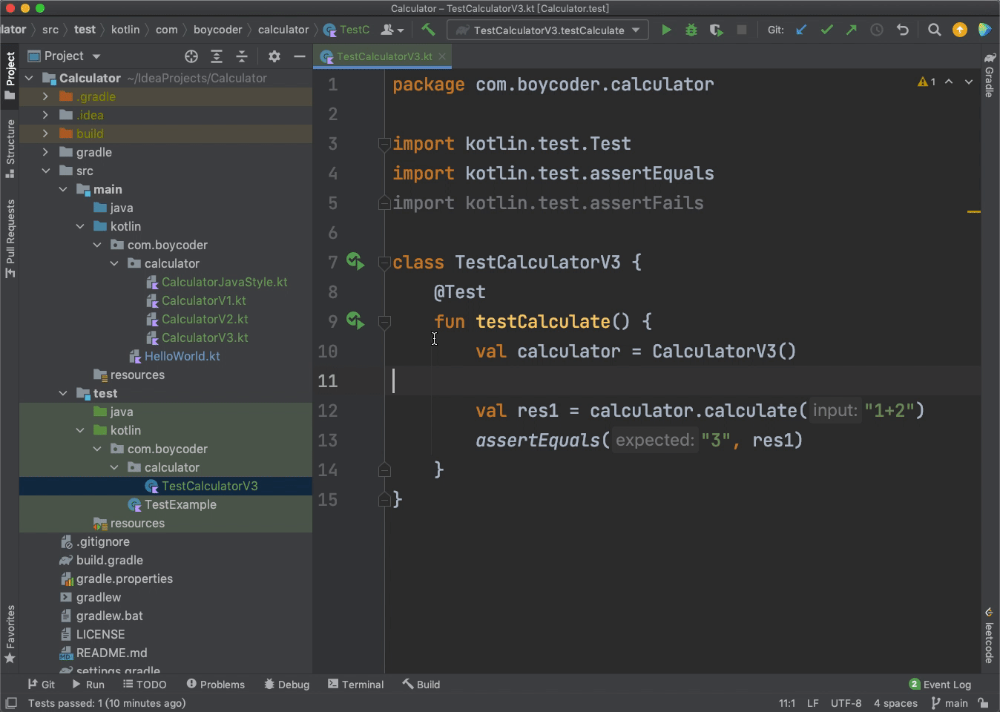
如果这时候，我们将“1+2”改成大数的加法，比如“2333333333333332+1”，并且将断言也修改一下：
val res1 = calculator.calculate("2333333333333332+1")
assertEquals("2333333333333333", res1)那么，你觉得单元测试的结果会是怎么样的呢？
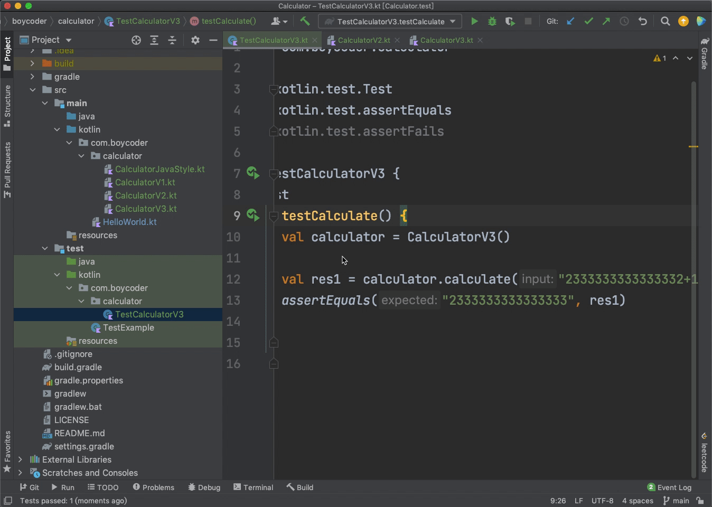
单元测试失败了！
具体原因相信你一定也能猜到，因为“2333333333333332”这个数实在太大了，已经远远超出了 Int 类型的范围，如果不做特殊处理的话，我们的程序是无法正常运行的。而这正好就是我们下一个阶段要做的事情：支持大数的加法。不论多大的两个数字相加，我们都要算出正确的结果。
这个单元测试的代码我们先留着，等我们实现“大数的加法”后，我们再重新运行一遍，这样一来，我们就可以借此验证代码是否正确。
第二阶段：大数加法
大数的加法，其实是我们程序员面试当中的一道高频题。它的解题思路也很简单，就是通过模拟我们手写加法竖式的方法，从个位、十位、百位、千位，一直累加，超过 10 的时候，我们需要进位。
我们以“135+99”为例：
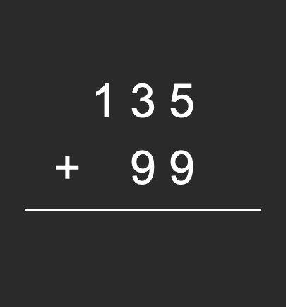
从上面的手写加法竖式的过程我们可以看出，这个计算其实就是分了三个步骤在进行，分别是个位、十位、百位：
个位计算，“5+9=14”，出现进位，这时候我们用 carry 来存储进位：carry=1，个位结果为 4；
十位计算，十位相加“3+9=12”，由于之前有过进位，所以应该是“3+9+1=13”，十位结果为 3；
百位计算，由于 99 不存在百位，我们自动补零，所以就应该是“1+0+1=2”，百位结果为 2。
最终，我们将每一位的结果拼接起来，就得到了最终的结果。有了这样的思路后，我们的代码就很容易实现了。
fun addString(leftNum: String, rightNum: String): String {
// ①
val result = StringBuilder()
// ②
var leftIndex = leftNum.length - 1
var rightIndex = rightNum.length - 1
// ③
var carry = 0
// ④
while (leftIndex >= 0 || rightIndex >= 0) {
// ⑤
val leftVal = if (leftIndex >= 0) leftNum.get(leftIndex).digitToInt() else 0
val rightVal = if (rightIndex >= 0) rightNum.get(rightIndex).digitToInt() else 0
val sum = leftVal + rightVal + carry
// ⑥
carry = sum / 10
result.append(sum % 10)
leftIndex--
rightIndex--
}
// ⑦
if (carry != 0) {
result.append(carry)
}
// ⑧
return result.reverse().toString()
}上面的代码一共有 8 处注释，代表了整体的程序流程，让我们一步步来分析：
注释①，我们创建了一个 StringBuilder 对象，用于存储最终结果，由于我们的结果是一位位计算出来的，所以每一位结果都是慢慢拼接上去的，在这里，为了提高程序的性能，我们选择使用 StringBuilder。
注释②，我们定义了两个可变的变量 index，它们分别指向了两个数字的个位，这是因为我们的计算是从个位开始的。
注释③，carry，我们用它来存储每一位计算结果的进位。
注释④，这个 while 循环当中，我们会让两个 index 从低位一直到高位，直到遍历完它们所有的数字位。
注释⑤，这里的逻辑是取每一位上的数字，其中有个细节就是补零操作，比如当程序运行到百位的时候，99 没有百位，这时候 rightVal = 0。
注释⑥，当我们的程序计算出结果后，我们要分别算出 carry，以及当前位的结果。这时候我们分别使用“除法”计算 carry，使用“取余”操作计算当前位的结果。
注释⑦，这里是为了兼容一个特殊的场景，在“99+1”的情况下，我们的 while 循环最多只会遍历到十位，如果不做特殊处理的话，结果将变成“99+1=00”。这并不是我们想要的，所以，为了兼容这种特殊情况，我们在 while 循环结束后增加了一个判断，如果 carry=1，那就说明在最大的那一位数计算完以后，仍然有进位，我们要手动添加。
注释⑧，对于一个算式“135+99”，我们的 result 拼接其实是倒叙的“432”，这时候我们需要将其翻转一下，才能得到正确的结果“135+99=234”。
到这里，我们的大数加法功能，就算实现了。让我们回过头，再去运行一次单元测试，来验证下我们的代码是否正确：
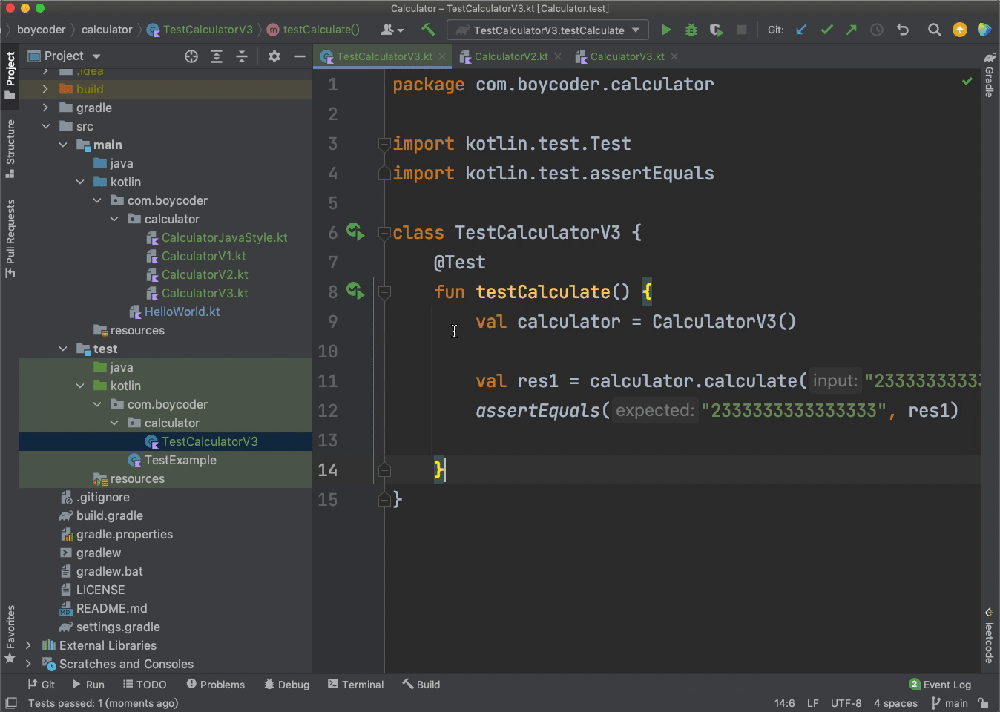
果然，在我们兼容了“大数加法”以后，单元测试就可以成功通过了。至此，我们的计算器 3.0 版本就算是完成了。
在这个版本的开发过程中，首先我们引入了单元测试，通过这种方式，我们可以测试代码逻辑是否正确，并可以辅助我们排查问题。接着，我们写了一个“2333333333333332+1”的测试用例，并且失败了，不过在完成大数加法的功能后，这个测试也最终通过了。
这里我需要特殊说明的是，为了不偏离本次实战课的目的，我们的单元测试只写了两个，但在实际的开发工作当中，单元测试是需要尽量覆盖所有情况的。换句话说，仅仅只是测试“1+2”“2333333333333332+1”这两种情况，是无法保证我们的计算器逻辑正确的。一般来说，一个应用于商业的计算器，它的单元测试用例数量会达到几百上千个。
小结
到这里，我们就通过完成三个不同版本的四则运算计算器，一起梳理了前面课程中，学习的那些重要的 Kotlin 的知识点，比如不可变的变量 val、when 表达式、数据类、枚举类，等等。并且也在实操过程中，一起思考了代码实现时可能会出现的问题。
你也可以在动手操作的过程中，具体感受下跟 Java 代码的不同，同时也看看自己的思路与课程的思路有什么不同，课程当中的代码还有哪些可以改进的地方。
最后我想让你注意的是，在 3.0 版本中，我们引入了单元测试功能。实际上，单元测试的作用，不仅仅可以验证新开发的功能，同时它还可以用于保证旧的功能不受影响。在实际开发工作中，我们很容易因为对功能 A 的改动，导致功能 B 出问题。然后往往由于时间限制，测试人员只测试了功能 A，忽略了功能 B，最终导致线上故障带来经济损失。
而借助单元测试，在每一次的开发工作完成以后，我们就统一跑一遍所有的单元测试，只要单元测试通过了，我们就能保证，新的功能没问题，而旧的功能也没问题。
动手实操
在 3.0 版本的开发当中，我们仅仅只实现了“大数的加法”，其余的“大数的减法”“大数的乘法”“大数的除法”都没有实现。请你挑其中一个功能，尝试自己实现，参考答案我会在之后放出来。
欢迎你在评论区分享你的实现思路，我们下节课再见。
COMMUNITY NOTES
读者评论
这篇文章暂时没有读者留言。